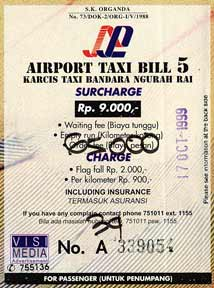

|
Believe This .... Sent: 17 Oct 99 05:26 PDT
|
|
| Prior Trav-E-Log: S.E.Asia Map The SAGA begins . . . | |
(Note:) This is the 1st in a series of Trav-E-Logs© sent while traveling in S.E.Asia between Oct 16, 1999 and Jan 22, 2000.. . . on the cheapest RT ticket ($590) to Indonesia or Malaysia I could find in several weeks of searching newspapers and the Internet. I'm prepared for cattle car treatment, which is reinforced when calling to reserve seat selection, and China Airlines tells me only first and business class passengers can reserve seat assignments ahead of time. So . . . arrived at LAX at 9:45 PM on Friday in a major traffic jam caused by the shear volume of travelers. Only 3 or 4 passengers in front of me at the China Airlines check in, and the line moves rapidly. The attendant insists the backpack be checked. At 40 pounds, I'm relieved at the loss in weight, but worried by the loss in control. Guess it didn't make sense to try and dance in South Pasadena on the way to the airport. I walk away from the counter with my hip sack around my waist, and fiddle at my side, noting how efficiently the check-in counter is operating. With 2 1/2 hours to kill, I sit down on the floor near an elevator and fiddle for an hour and a half. The image of someone sitting and fiddling at the airport was too much for some passersby - a few came over to look into the open fiddle case. After closing it, some became more perplexed. So I install the mute. Muffled, yes, but the sound is music to my ears . . . .
At 30 minutes past midnight, all passengers are quickly loaded onto a tram, and driven to a waiting 747-400. I see a staff of over 20 embark on the airplane, and it turns out to be only 85% booked. The flight leaves the gate and is airborne at the scheduled time of 1:15 AM Saturday morning. Nicest flight I have ever experienced, bar none. Three movies, two full meals, wine, brandy, and continuous drink service, all complimentary. Passengers are encouraged to use the "call" button. Slippers, toothbrush, and lotion. The crew is even kind enough to supply a shaver, normally reserved only for "front section" passengers. There is an empty seat between my window assignment and the isle passenger, who gives me my first self-directed Indonesian language lesson. I get some semblance of sleep - possibly 3 hours, as I feel totally refreshed upon arrival in Taiwan. The 3 hour layover in Taipei permits more fiddle practice, and I keep running into a Japanese family returning from a 2 month stay in the USA and Canada. We exchange addresses. The 2nd leg to Denpasar is as pleasant as the first, arriving in Bali on schedule.
Arriving at the passport control desk, the agent asks to see my ticket for leaving country within 60 days. I show him my return ticket -- 97 days away. He says "This is problem." My explanation that the Indonesian Consulate in Los Angeles said, 'no problem, just leave the country before 60 days, and return for another 60 day visa,' falls on deaf ears. The agent says for US$ 20, he will fix problem. Setting my wallet on the counter bothers him, and he tells me to hide it. I only have $12 in small bills, and he says "no problem". Fifty eight years old, and now I start bribing government officials!
After an exorbitant taxi ride to Ubud (65,000 Rupia to get there, but only 12,000 Rupia to return), found a place close to the one I stayed in seven years ago. The best part about this location is its proximity to everything that's happening. A quick clothes change, and it's off to the Tourist Information Office. Almost the first foreigner I run into has a startling resemblance to someone I think I know, so I ask him if he knows me. His accent is American. Where you from -- East coast --where? -- was Philly for 2 1/2 years, Hampton Roads before that -- no deal, I lived in Takoma Park. You a Contra dancer? YES -- GLEN ECHO! -- BUFFALO GAP --!!!!!!!!!!! Jim Avery, now living in New Mexico. What a small world -- I seem to recall he was one of the first guys I saw wearing a skirt at Buffalo Gap, when the art of contra dancing was a totally new experience.
What IS that funny sound you hear in the evenings? I feel re-assured while lying in bed, knowing it's presence will help me sleep. My first taste of Indonesia was only for two weeks, and restricted to Bali and Java. Now I've returned after seven years, ready to start an adventure of a lifetime.